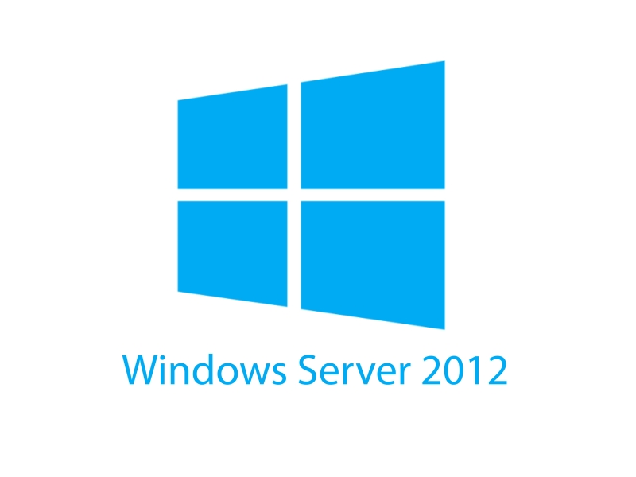

Bienvenido!
Aquí encontraras contenido sobre guias de redes, servidores y
programación y mucho mas...

Configuración e Instalación Windows Server 2012
Pasos De Instalación Windows Server. Recursos utilizados: -
ISO Windows Server 2012 R2. - Oracle VM VirtualBox. -
SimpleSMTPClient ...
Leer Mas →
DHCP
El Protocolo de configuración dinámica de host (DHCP) es un
protocolo cliente/servidor que proporciona automáticamente un
host de Protocolo de Internet (IP) con su dirección IP y otra
información de configuración relacionada, ...
Leer Mas →
DNS
El DNS, o sistema de nombres de dominio, traduce los nombres
de dominios aptos para lectura humana (por ejemplo,
www.amazon.com) a direcciones IP aptas para lectura por parte
de máquinas (por ejemplo, 192.0.2.44)...
Leer Mas →
FTP
FTP son las siglas de File Transfer Protocol (protocolo de
transferencia de archivos). Comencemos a conocer un poco más.
Básicamente, un “protocolo” es un conjunto de procedimientos o
reglas que permiten que los dispositivos electrónicos se
comuniquen entre sí...
Leer Mas →
SMTP
El protocolo simple de transferencia de correo (SMTP) es un
protocolo TCP/IP que se utiliza para enviar y recibir correo
electrónico. Normalmente se utiliza con POP3 o con el
protocolo de acceso a mensajes de Internet (IMAP)...
Leer Mas →
Servidor IIS
Son las iniciales de Internet Information Services y si bien
es más conocido como servidor web en realidad son un conjuntos
de servicios que transforman un sistema Microsoft Windows en
un servidor capaz de ofrecer servicios Web, FTP y SMTP entre
...
Read more →